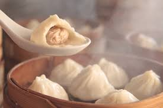
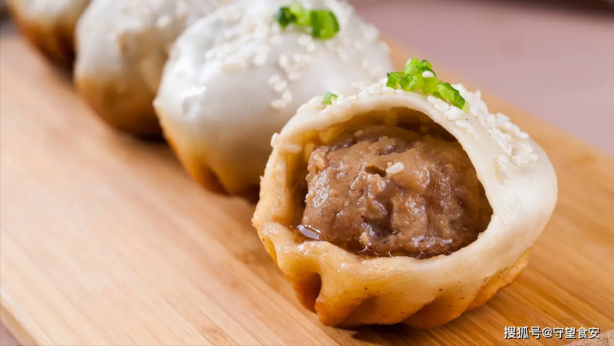
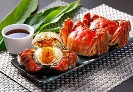
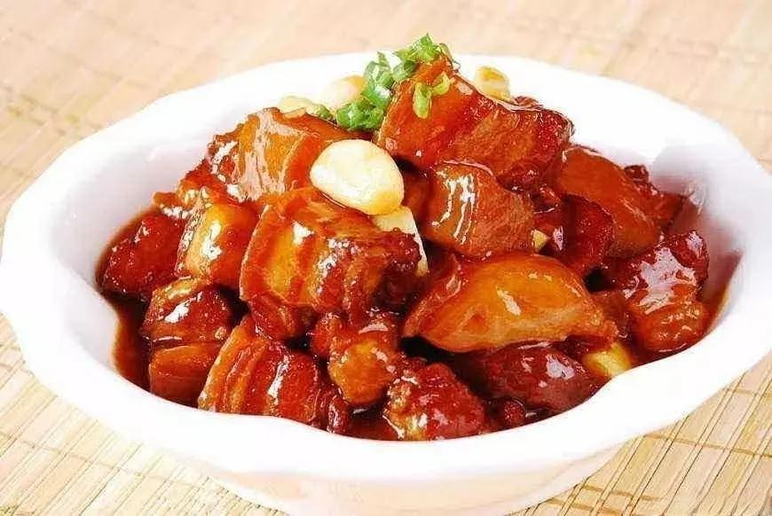
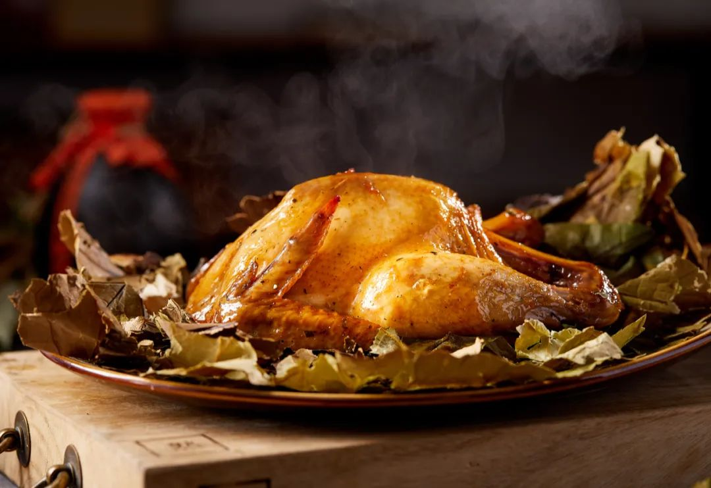

Shanghai's Famous Dishes
From savory snacks to exquisite delicacies, these dishes showcase the essence of Shanghai's food culture.

Xiaolongbao
Steamed soup dumplings filled with juicy broth and pork.

Shengjianbao
Pan-fried buns with a crispy bottom and savory filling.

Hairy Crab
A seasonal delicacy enjoyed for its tender meat and rich roe.

Scallion Oil Noodles
Simple yet flavorful noodles tossed in scallion-infused oil.

Red-Braised Pork
Tender pork belly slow-cooked in soy sauce and spices.

Beggar’s Chicken
Clay-baked chicken wrapped in lotus leaves, rich in aroma.